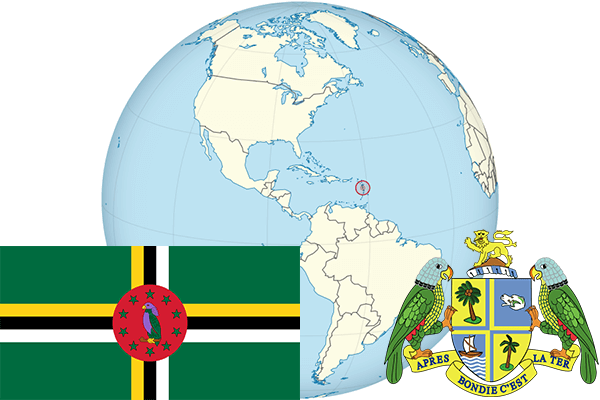

To`liq nomi: Dominika Hamdoʻstligi
Region: Markaziy Amerikaning sharqiy qismi
Qonunchilik shakli: Respublika
Mustaqillik kuni : 3-noyabr 1978 yil (Birlashgan Qirollikdan)
Poytaxt: Rozo
Maydoni: 754 km² (dunyoda 172 -o`rinda )
Chegaradosh davlatlari: yo`q
Aholisi: 73 607 (dunyoda 202 -o`rinda, 2014 -yil roʻyxat)
Aholi zichligi: 93 /km²
Aholining o`rtacha yoshi: 75,2 yil ( 78,2 ayollar, 72,2 erkaklar)
Rasmiy tili: Ingliz tili
Dini: Katolik
Pul birligi: East Caribbean Dollar
Telefon prefiksi: +1 767
Internet domen: .dm
Xalqaro tashkilotlarga a`zoligi: BMT (1978– yildan)
Dengiz va okeanlarga chiqishi: Karib dengizi
YIM: Butun: $ 764 mln, Jon boshiga: $ 10 800 (2014 - yil roʻyxati)
Yirik shaharlari: Rozo